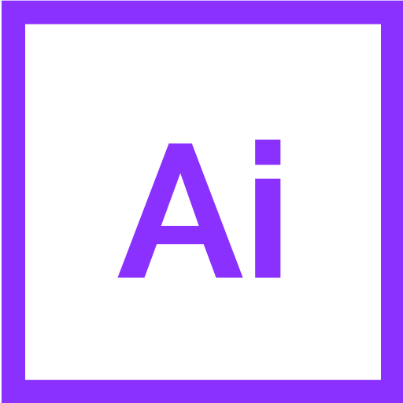
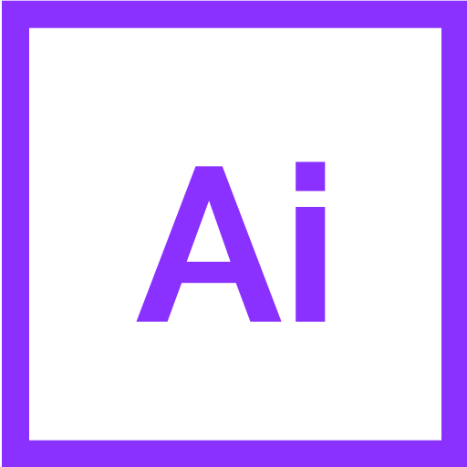

Dans le cadre de mon projet de fin d'étude, j'ai réalisé un jeu de plateau interactif. Le sujet, l'anxiété de notre génération tout en rapprochant ça de notre outil majeur : le téléphone. Il nous aide au quotidien, mais permet aussi à des problèmes de s'installer. Appel du boulot le soir, sms indésirable, réseaux sociaux jouant sur notre image...
Ils sont nombreux. Mais comment avertir d'un message fort, sans attaquer la cible ou le téléphone ? Le choix d'un jeu, d'un ton satirique, m'a semblé pertinent pour évoquer différentes problématiques modernes.
Rammetto
Dialogues et paragraphes
Aa
Sen
Titrages
L'ensemble de la charte est basée sur une inspiration des vieux cartoons, à la manière de Silly Symphonies. Le logo, en arc, apporte du rythme et de la fluidité. Le nuage sert à cacher le mot merde, afin de ne pas afficher une identité trop grasse.
L'icônographie se veut inspirer des expressions françaises. Cela apporte de la nostalgie, et ramène à l'époque où on les apprenait.
Le personnage principal est une lune, car il vient de l'expression "Être mal luné", ce qui rejoint l'aspect déprimé du sujet.
#282727
Noir à 95%
#f6f6f6
Noir à 5%
Les cartes, au format de cartes de tarot (pour exprimer l'idée de lire son avenir incertain), contiennent chacune une puce NFC.
Elles remplacent un plateau de jeu.
Activée avec le pion, elles renvoient sur notre support numérique à une page qui affiche la problématique de la case.


 
